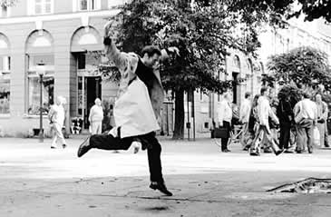

Installations
Very Nervous System
PetroCanada Media Arts Award (1988)
Prix Ars Electronica Award of Distinction for Interactive Art (1991) financially assisted by the Canada Council for the Arts and the Ontario Arts Council
Very Nervous System is the third generation of interactive sound installations which I have created. In these systems, I use video cameras, image processors, computers, synthesizers and a sound system to create a space in which the movements of one's body create sound and/or music. It has been primarily presented as an installation in galleries but has also been installed in public outdoor spaces, and has been used in a number of performances.
David Rokeby in Very Nervous System in the street in Potsdam
I created the work for many reasons, but perhaps the most pervasive reason was a simple impulse towards contrariness. The computer as a medium is strongly biased. And so my impulse while using the computer was to work solidly against these biases. Because the computer is purely logical, the language of interaction should strive to be intuitive. Because the computer removes you from your body, the body should be strongly engaged. Because the computer's activity takes place on the tiny playing fields of integrated circuits, the encounter with the computer should take place in human-scaled physical space. Because the computer is objective and disinterested, the experience should be intimate.
The active ingredient of the work is its interface. The interface is unusual because it is invisible and very diffuse, occupying a large volume of space, whereas most interfaces are focussed and definite. Though diffuse, the interface is vital and strongly textured through time and space. The interface becomes a zone of experience, of multi-dimensional encounter. The language of encounter is initially unclear, but evolves as one explores and experiences.
The installation is a complex but quick feedback loop. The feedback is not simply 'negative' or 'positive', inhibitory or reinforcing; the loop is subject to constant transformation as the elements, human and computer, change in response to each other. The two interpenetrate, until the notion of control is lost and the relationship becomes encounter and involvement.
The diffuse, parallel nature of the interaction and the intensity of the interactive feedback loop can produce a state that is almost shamanistic. The self expands (and loses itself) to fill the installation environment, and by implication the world. After 15 minutes in the installation people often feel an afterimage of the experience, feeling directly involved in the random actions of the street.
The installation could be described as a sort of instrument that you play with your body but that implies a level of control which I am not particularly interested in. I am interested in creating a complex and resonant relationship between the interactor and the system.